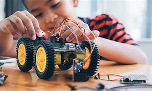
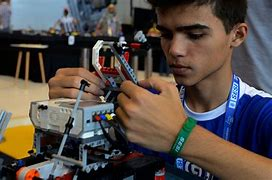
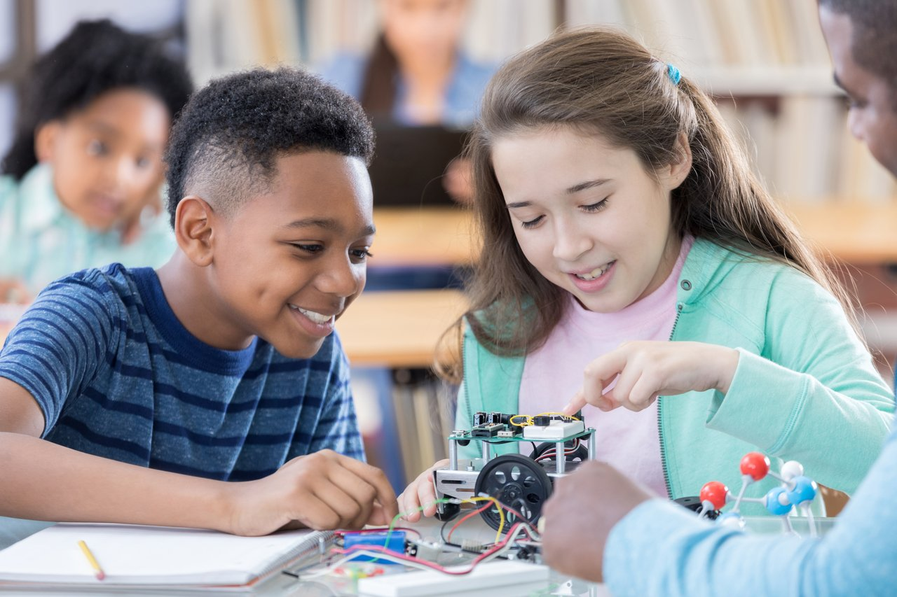

<section id="content-wrap" class="blog-single">
    <div class="row">
        <div class="col-twelve">

            <article class="format-gallery">  
                <div class="content-media">
                     <div class="post-slider flexslider">
                         <ul class="slides">
                             <li>
                                  
                             </li>
                             <li>
                                  
                             </li>
                             <li>
                                  
                             </li>
                         </ul>							
                     </div> 
                 </div>

                 <div class="primary-content">

                     <h1 class="entry-title">Robótica nas Escolas</h1>	

                     <ul class="entry-meta">
                         <li class="date">Maio 25, 2021</li>						
                         <li class="cat"><a href="">Atualidade</a><a href="">Importância</a></li>				
                     </ul>						

                     <p class="lead">Com a ascensão de tecnologias aplicadas ao ensino, a robótica educacional vem sendo incorporada por escolas de diversos países.
                         Seja como parte da grade curricular obrigatória, disciplina extracurricular ou integrando outras matérias, a construção de robôs tem o poder de transformar o processo de aprendizagem, tornando as aulas mais divertidas e atrativas.
                         Também desperta os alunos para o campo científico de um jeito simples, partindo de problemas do cotidiano para mostrar o funcionamento de dispositivos tecnológicos.</p> 

                     <p>O raciocínio e pensamento lógico são desenvolvidos a partir de muito treino, por isso, se beneficiam de uma abordagem prática – que é a premissa da robótica educativa.
                         Tanto nos locais que a adotam como disciplina quanto naqueles que usam seus conceitos para ampliar os horizontes de professores e alunos, existe esse ganho de estímulo ao raciocínio, começando por identificar o melhor caminho para solucionar um problema.</p>

                     <p>
                        


                     <h2>Em qual estágio da aprendizagem é ideal começar a estudar robótica educacional?</h2>

                     <p>Esta é uma questão importante, para qual vale recorrer a esta interessante linha de pensamento:</p>
                     
                     <blockquote><p align="justify">Muito além da introdução de recursos tecnológicos no ambiente educacional, especificamente na educação básica, se faz necessário desenvolver e estimular os alunos a se tornarem profissionais da ciência, pois somente assim será possível amplificar os avanços científicos e tecnológicos, tendo como missão capacitar para a organização do pensamento de maneira lógica, e auxiliar na construção de uma consciência crítica e participativa em relação ao meio em que se vive.</blockquote>
                     
                     <p align="justify">Retirado deste artigo da administradora Simonica Bidin, o trecho acima aponta para a possibilidade de despertar o interesse pela ciência ainda durante a educação básica.

                         Nesse cenário, estudantes do Ensino Fundamental e Ensino Médio são os mais indicados para o contato com a robótica educacional, pois já estão alfabetizados e conhecem um pouco de matemática, sendo capazes de fazer operações simples.</p>
                     
                     <h2>O que é Robótica Educacional?</h2>

                     <p>  Robótica educacional é um método de aprendizagem focado na pesquisa, descoberta e construção de uma máquina como resultado da aquisição de conhecimentos. Ele depende do uso de kits prontos de montagem ou transformação de outros materiais, como sucata e itens recicláveis para compor as peças do robô.</p>	
                     <p>Além da montagem da máquina, é fundamental que o processo produza um robô capaz de receber comandos e executar determinadas tarefas.</p>	
                         Durante o processo de planejamento e estruturação da máquina, estudantes de diferentes idades compreendem o papel e a importância de cada parte do robô, incluindo seus motores, sensores e mecanismos que permitem que ele conclua os comandos dados.

<br><br>
                     <h2>Qual é o objetivo da robótica educacional?</h2>
                     <ul>
                         <li>Facilitar o aprendizado de disciplinas como física e matemática</li>
                         <li>Tornar as aulas mais dinâmicas e divertidas</li>
                         <li>Proporcionar mais interações entre educadores e alunos</li>
                         <li>Enriquecer a grade curricular com disciplinas voltadas à tecnologia</li>
                         <li>Preparar os estudantes para o mercado de trabalho, repleto de vagas não preenchidas no campo da tecnologia.</li>
                     </ul>
</div> 	  		
            </article>
        </div>
    </div>
</section>
